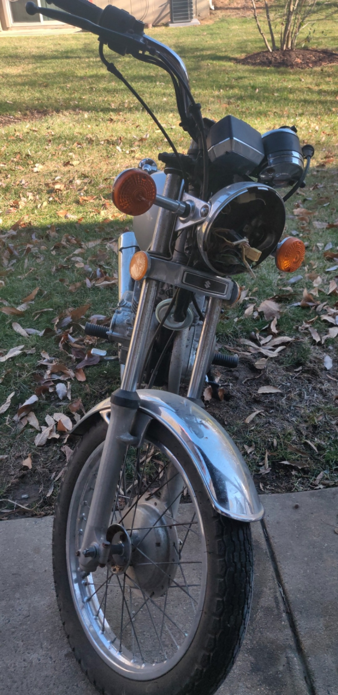

After getting my license, I began searching around for some cars on Craigslist. However, I discovered that car insurance would probably cost more than the car itself, so
I started to look into other options. I discovered that motorcycles had much cheaper insurance, and cost less to buy. So I hopped on Craigslist, and found
an old 1982 Suzuki GN250, contacted the owner, and bought it for about $300. The Bike was in a state of disrepair, as it looked to have been exposed outside to the elements for a decade if not more.
The gas tank was leaking and rusted everywhere, the starter didnt work, and the turn signals failed to operate, in addition to numerous other problems.
But eventually, after a few days of work, I managed to get the engine running. Here's a video of the Bike's first start:
Next, I tried to figure out why the starter switch didnt work. I took the right handlebar assembly apart, and found some corroded switch contacts. After cleaning them,
the Bike started right up.
After that, I had to fix the turn signals. I made a simple oscillator circuit to test the blinkers, and connected it to the Bike.
Later, I bought a new gas tank and am now planning on tuning the carbuerator, changing the brakes, and doing additional fixes in the future.
The bike at its present state:

(Headlight was removed to remove a wasp nest)
Wasp nest: